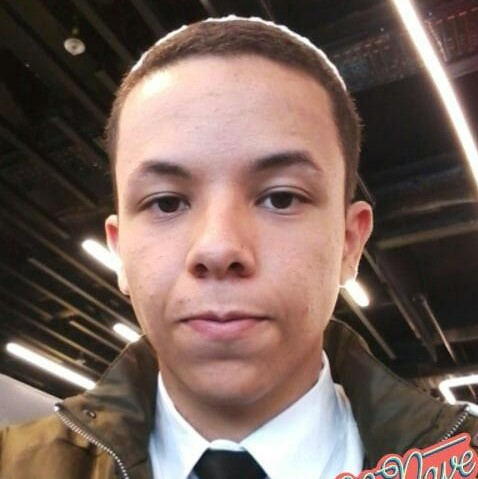

Olá, meu nome é Gabriel e eu sou um Web Designer.
Olá, meu nome é Gabriel e eu sou um Web Designer.
Técnico em Informática para Web pelo Instituto Federal de Alagoas(IFAL), tendo participado de dois projetos PIBITI, tomei gosto pelo Front-end e Design de Interfaces após meu primeiro projeto - o sistema Gerartifal, que foi feito em 2018.
Após terminar o curso, busquei me especializar no Web Design, através de mais projetos como o Saúde Hoje e o SirvaMe, que me ajudaram a aprender muito dos princípios do design e criação de logos.
Hoje em dia, procuro uma oportunidade de me inserir no mercado de trabaho, para poder me desenvolver ainda mais, e ganhar mais experiência em UI Design e Front-end.